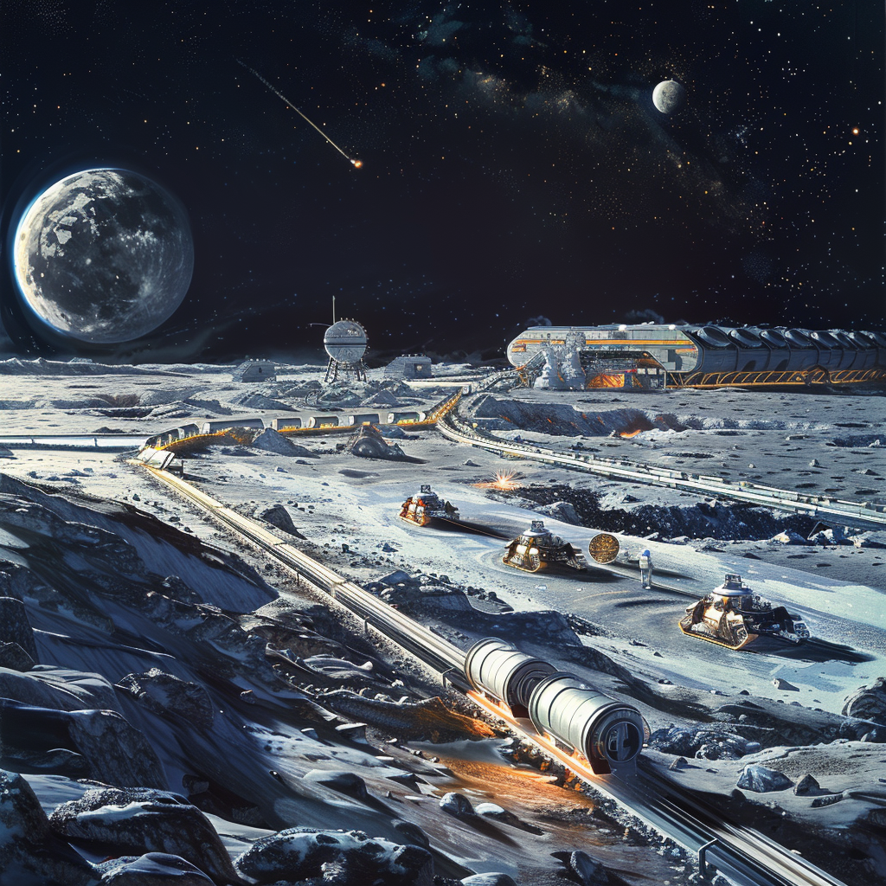

Surface Supply and Logistics
Surface Supply and Logistics

Charging Ports
- Designated surface ports: For resupply missions facilitating transfer of water and other supplies from lunar landers to the habitat.
Lunar Rovers
- Equipped with water tanks: Transport water from surface supply ports to underground storage, ensuring resources can be distributed throughout the habitat as needed.